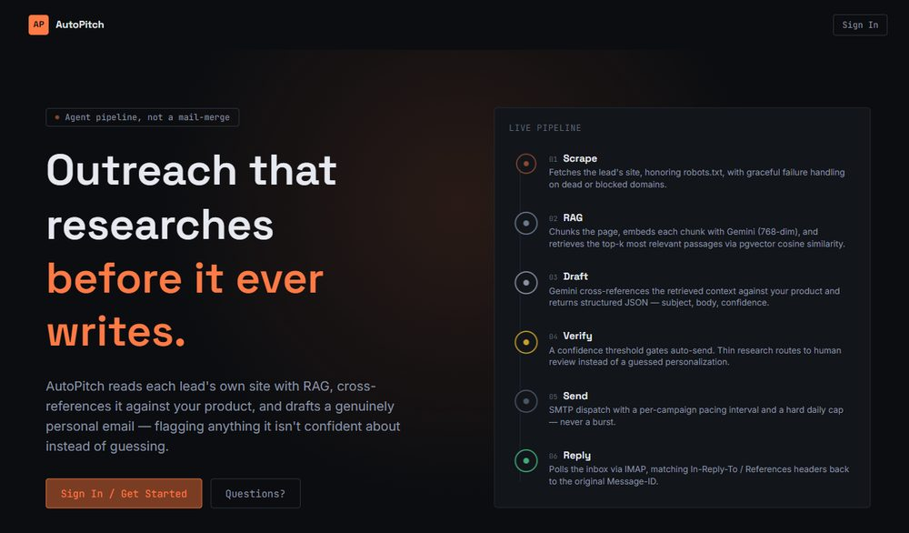

AI / Agents
AutoPitch
An agentic cold-outreach engine that researches before it writes. It scrapes a lead's own site, retrieves the most relevant passages with RAG, and has Gemini draft a personalized email grounded in that context — scoring its own confidence and routing anything uncertain to human review instead of guessing.
- Full six-stage pipeline: scrape → chunk & embed → retrieve (pgvector) → draft → confidence-gate → send → reply-match
- Real email threading — matches replies back to the original message via In-Reply-To / References headers
- Respects robots.txt and paces sends with a hard daily cap — built for deliverability, not just a demo